Guía de laboratorio
En esta sesión de ejercicios vamos a describir los aspectos más importantes del uso del laboratorio para la realización de las prácticas del Especialista.
Cuentas de usuario
En el Título de Especialista vas a tener que usar distintas cuentas de usuario en distintas aplicaciones. Intentamos aclarar todo en este apartado.
Ordenadores de la EPS
Los laboratorios en los que se realizarán las prácticas están gestionados por la Escuela Politécnica Superior. Para acceder a ellos se debe contar con una cuenta de usuario en la EPS. Todos los alumnos del Especialista están registrados en la EPS con su NIF como usuario y contraseña. Es posible cambiar la contraseña entrando como usuario en la zona de servicios de la EPS (http://www.eps.ua.es > servicios)
Al arrancar el ordenador deberás seleccionar como sistema operativo Windows XP. Este será el sistema en el que se van a realizar las prácticas del curso. Introduce a continuación tu usuario y contraseña.
No debes confiar en que lo que dejes en el disco duro del ordenador se encuentre en la siguiente sesión. Los técnicos pueden reinstalar los ordenadores en cualquier momento. Por ello debes tener cuidado de copiar tu trabajo en el lápiz USB (ver sección 2) y en el repositorio CVS del curso (ver sección 3).
Usuario y contraseña del Especialista
En el Especialista Java Enterprise tenemos tres recursos protegidos en los que hay que identificarse con un usario y una contraseña. Se trata del servidor de apuntes (http://www.jtech.ua.es/j2ee/2006-2007/restringido/, de Moodle (http://moodle.jtech.ua.es) y del servidor CVS.
En todos estos servicios tendrás el mismo usuario y contraseña. El usuario se forma con las iniciales de tu nombre y tu primer apellido. La contraseña inicial es tu NIF. Es posible cambiar la contraseña, pero hay que hacerlo en los distintos servicios. A continuación presentamos algunos detalles de cada servicio y explicamos cómo cambiar la contraseña en cada caso.
Apuntes
Los apuntes, trasparencias, plantillas para los ejercicios y demás material docente se encuentra en un sitio web restringido a los alumnos del especialista. Puedes acceder a esta zona pinchando en el recuadro correspondiente (azul) en la web pública del especialista (http://www.jtech.ua.es/j2ee) o escribiendo directamente la URL http://www.jtech.ua.es/j2ee/2006-2007/restringido/. Una vez introduzcas tu usuario de Especialista Java Enterprise y tu contraseña podrás acceder a esta web.
Podrás cambiar tu contraseña en la dirección www.jtech.ua.es, pinchando en el apartado Usuario: USUARIO del menú izquierdo, y seleccionando la opción Ver/Modificar mis datos personales.
Moodle
Vamos a utilizar Moodle como plataforma de trabajo colaborativo. La usaremos para gestionar foros de los distintos módulos, calendario y otras opciones que iremos presentando. Se accede pinchando en el recuadro correspondiente (amarillo) en la web del Especialista o escribiendo directamente la URL moodle.jtech.ua.es.
La contraseña inicial será el NIF, y la primera vez que te registres te pedirá una nueva contraseña.
Repositorios CVS
Se ha instalado en el servidor del curso de especialista (www.jtech.ua.es) un conjunto de repositorios CVS para guardar los ejercicios y trabajos que se desarrollen a lo largo del curso. Cada alumno es propietario de un repositorio y allí se guardarán los ejercicios para que sean corregidos por los profesores del curso.
Para acceder al repositorio CVS se debe usar el identificador y la contraseña del Especialista. De esta forma sólo tú (y el profesor, para poder corregir los ejercicios) tienes acceso a tus proyectos en el repositorio.
Para cambiar tu contraseña debes conectarte con ssh (utilizando alguna herramienta de Windows como Putty) al servidor www.jtech.ua.es y ejecutar el comando passwd. Supongamos que tu usuario es iasimov:
ssh iasimov@www.jtech.ua.es iasimov@www.jtech.ua.es's password: CONTRASEÑA ANTIGUA www.jtech.ua.es$ passwd Changing password for user iasimov. Changing password for iasimov (current) UNIX password: CONTRASEÑA ANTIGUA New password: NUEVA CONTRASEÑA Retype new password: NUEVA CONTRASEÑA passwd: all authentication tokens updated successfully.
La nueva contraseña debe ser una buena contraseña UNIX: ser suficientemente larga y contener caracteres y números. Si olvidaras la contraseña puedes enviar un correo al administrador del repositorio (malozano@dccia.ua.es).
Cómo trabajar con espacios de trabajos de Eclipse
Eclipse es el entorno de programación que se va a usar en todas los módulos del curso. El trabajo en Eclipse se organiza en proyectos que se guardan en espacios de trabajo (Workspaces). Un espacio de trabajo se corresponde con un directorio físico del disco duro y los proyectos se corresponden con subdirectorios suyos. En el curso crearemos un espacio de trabajo por cada uno de los módulo.
Cuando arrancamos Eclipse por primera vez aparece un cuadro de diálogo en el que nos pide el espacio de trabajo en el que vamos a trabajar.

Por defecto, Eclipse sugiere el directorio C:\Documents and Settings\USUARIO\workspace. En el caso de los ordenadores de la EPS, el directorio es: C:\Documents and Settings\eps\workspace. Si aceptamos ese espacio de trabajo, Eclipse crea el directorio y comenzaremos a trabajar en él. También es podemos cambiar el nombre del espacio de trabajo y Eclipse creará el directorio correspondiente. Por último, también podemos explorar el sistema de ficheros y escoger un espacio de trabajo previamente creado.
Una vez que hemos trabajado con Eclipse, creando distintos proyectos dentro del espacio de trabajo actual, es posible que queramos guardar una copia de seguridad del espacio de trabajo actual, o pasárselo a algún compañero para que siga trabajando con él. Para ello no hay más que copiar el directorio espacio de trabajo.
Vamos a realizar un pequeño ejercicio para aprender a trabajar con espacios de trabajo de Eclipse.
Creación y copia de espacios de trabajo
En este pequeño ejercicio vamos a comprobar lo sencillo que es guardar un espacio de trabajo Eclipse en el disco USB. Seguiremos los siguientes pasos:
- Abrimos Eclipse y creamos un espacio de trabajo llamado presentacion.
- Creamos dos proyectos (pres-proyecto1 y pres-proyecto2) y algún fichero dentro de los proyectos.
- Copiamos el espacio de trabajo al disco USB.
- Borramos los espacios de trabajo del disco duro.
- Copiamos el espacio de trabajo al disco duro y lo abrimos. Comprobamos que están todos los proyectos.
Vamos a continuación a realizar estos pasos de forma detallada. Para crear el espacio de trabajo llamado presentacion no hay más que arrancar Eclipse y que cambiar el nombre del espacio de trabajo sugerido:
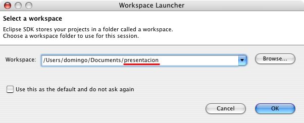
Una vez arrancado Eclipse en el espacio de trabajo definido, tendrá el siguiente aspecto:
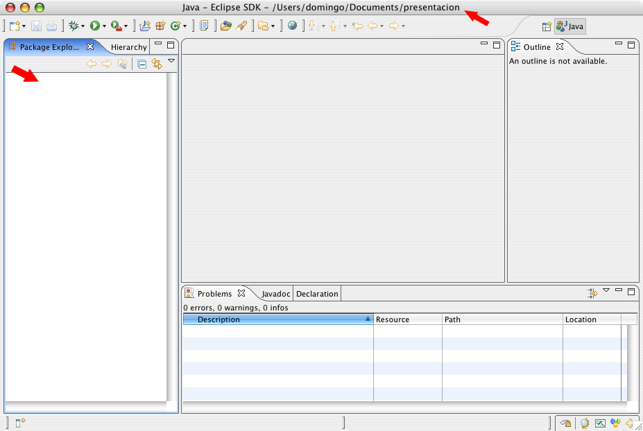
En el panel vertical izquierdo aparecerán los paquetes (todavía no hemos creado ninguno). En el nombre de la ventana aparece la localización del espacio de trabajo actual.
Para crear un proyecto podemos escoger la opción File>New>Project... o pulsar el botón derecho sobre el panel de proyectos y escoger la opción New>Project.... En cualquiera de estos casos, aparecerá un asistente que nos guiará para crera el tipo de proyecto que deseemos. En esta primera sesión vamos a escoger el proyecto de tipo General:
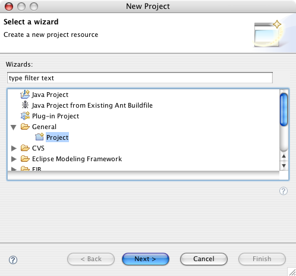
La siguiente pantalla del asistente nos pide el nombre del proyecto. Damos como nombre pres-proyecto1. Todos los nombres de proyecto vamos a escribirlos precedidos del nombre corto del módulo en que estemos haciendo los ejercicios.

Cuando pulsamos Finish Eclipse crea el proyecto. Aparece como una carpeta en el panel de proyectos. En el disco duro se habrá creado el directorio corresondiente.
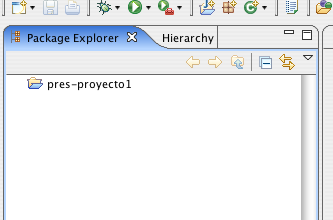
Creamos ahora otro proyecto llamado pres-proyecto2 de la misma forma que el proyecto anterior.
Para terminar con la creación de proyectos, creamos un fichero en uno de los proyectos usando la opción File>>New>File. Aparece el cuadro de diálogo siguiente, en el que se nos pide seleccionar el proyecto padre del fichero y su nombre. Lo llamamos prueba.txt
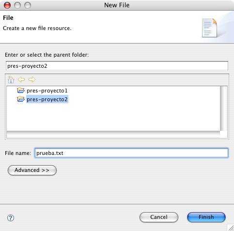
Tras introducir el nombre del fichero, Eclipse abre un editor en el panel central en el que podremos editar el contenido del fichero. Escribamos cualquier cosa.
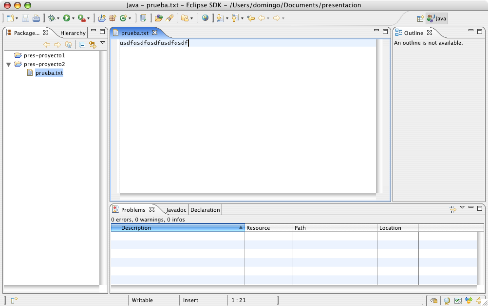
Grabamos el fichero y cerramos Eclipse.
Si ahora exploramos el disco duro vemos que la estructura de directorios creados es idéntica a la vista en Eclipse:
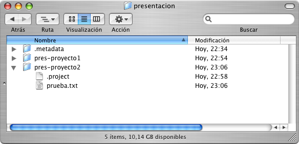
La carpeta presentacion contiene un directorio .metadata que guarda la configuración de Eclipse. A su vez, cada subdirectorio correspondiente a cada proyecto contiene un directorio .project en el que se guarda la configuración de Eclipse relacionada con el proyecto.
Para copiar un espacio de trabajo basta pues con copiar la carpeta que contiene el directorio .metadata. Puedes hacer la prueba y copiarlo al lápiz USB, borrarlo del disco duro y copiarlo en otra ubicación. Si abrimos Eclipse en esta nueva ubicación verás que el aspecto del espacio de trabajo es el mismo que antes.
Además de realizar esta copia de seguridad de tus ejercicios, también te vamos a pedir que publiques los proyectos en el repositorio CVS. Lo explicamos en el siguiente apartado.
Uso del repositorio CVS
La tecnología CVS permite mantener un repositorio remoto en el que se guardarán los distintos proyectos realizados en Eclipse. Mediante esta tecnología es posible realizar un control de versiones, de forma que cada vez que se sube un proyecto al repositorio sólo se guardan los cambios realizados con respecto a la versión ya existente. Es posible recuperar versiones anteriores del proyecto o incluso mantener varias ramas con versiones paralelas de un mismo proyecto.
FIGURA
CVS es muy usado en los equipos de desarrollo software, ya que permite que sincronizar un único repositorio remoto (donde se encuentra el proyecto en el que se está trabajando) con múltiples clientes locales (desarrolladores), de forma que todos los clientes comparte el mismo proyecto, pueden subir sus cambios y mantenerse sus proyectos sincronizados.
El repositorio CVS del curso es accesible desde cualquier ordenador conectado a Internet. Cada alumno tiene disponible un repositorio en el que puede mantener de forma remota los proyectos en los que está trabajando. El nombre del repositorio coincide con el login del alumno.
Los datos del repositorio CVS son los siguientes:
- Dirección: www.jtech.ua.es
- Ruta del repositorio: /usr/local/cvs-jtech/USUARIO
- Modo de acceso: extssh
Existen múltiples clientes para operar con CVS. Uno de los más interesantes está integrado en Eclipse. A continuación vamos a ver de forma detallada cómo operar con él.
Cómo subir un proyecto al repositorio CVS
Supongamos que queremos guardar uno de los proyectos desarrollados en esta sesión, por ejemplo el proyecto pres-proyecto2.
Para subir el proyecto al repositorio CVS hay que seleccionarlo, pulsar el botón derecho y escoger la opción Team>Share Project..:
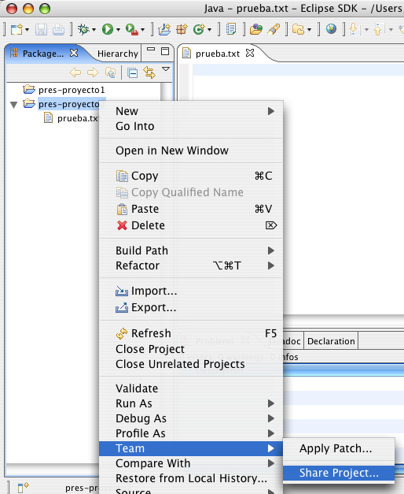
Aparecerá una ventana en la que hay que proporcionar los datos del repositorio CVS. Estos datos se grabarán en el directorio de trabajo de Eclipse y no tendrás que introducirlos de nuevo. Es recomendable no grabar tu contraseña de usuario si estás en un ordenador público.
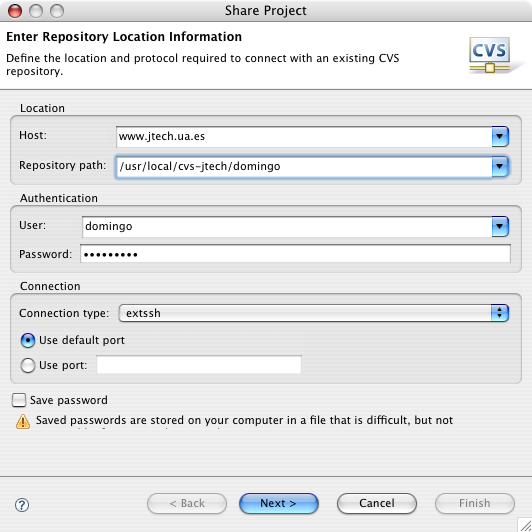
A continuación debemos indicar cuál será el nombre que en el repositorio CVS va a tener el proyecto que vamos a subir. Es lo que se denomina nombre del módulo CVS. Escogemos la opción por defecto de Eclipse (usar el nombre del proyecto como nombre del módulo CVS):
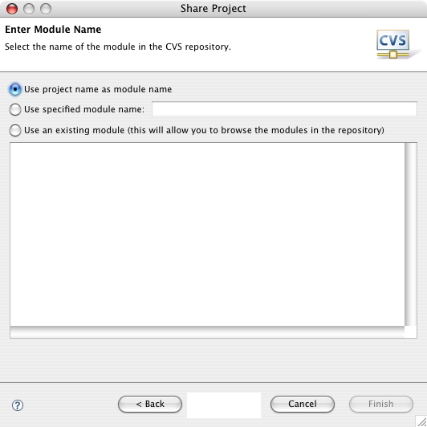
Pulsando el botón Next> aparecerá la siguiente pantalla en la que podrás revisar qué ficheros se van a guardar en el módulo recién creado. Aparecen con un signo + los ficheros que se van a añadir al módulo.
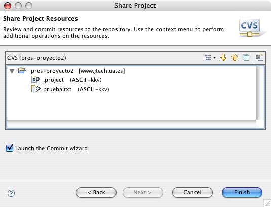
A continuación pulsamos Finish y aparecerá la pantalla con el comando commit. El comando commit es un comando CVS con el que se guardan los cambios en el repositorio, así como los comentarios sobre dichos cambios que consideremos oportunos. Es conveniente rellenar siempre los comentarios, porque serán útiles para examinar la historia de cambios.
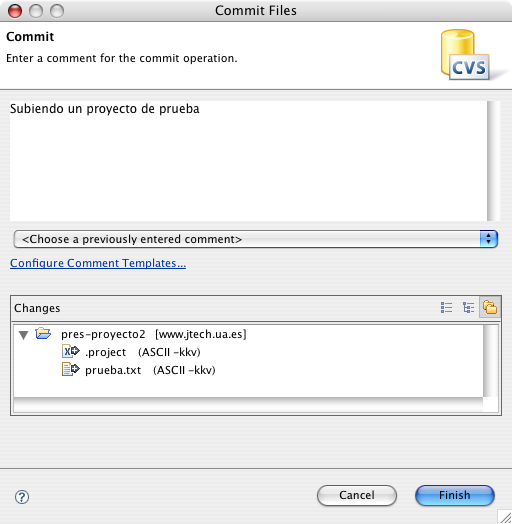
Una vez guardados los ficheros en el repositorio, el proyecto quedará enlazado al repositorio CVS. En el panel de proyectos de Eclipse aparece el servidor CVS asociado al proyecto y todos los ficheros y proyectos enlazados aparecen con un icono especial:
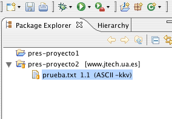
Cómo subir al repositorio cambios en el proyecto local
Una vez creado o descargado un repositorio en un proyecto haremos modificaciones en el proyecto local: modificaremos el contenido de algún fichero, crearemos nuevos ficheros y directorios o borraremos ficheros existentes. Eclipse marca todos aquellos recursos que se han modificado con un símbolo especial (">").
Por ejemplo, selecciona el fichero prueba.txt, modifica su texto y grábalo. Eclipse debe mostrar lo siguiente:
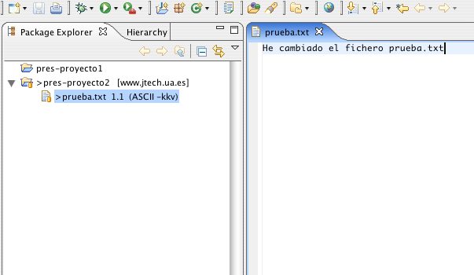
Nota que se han marcado los ficheros que se van a modificar en el repositorio. Para grabar (commit) los cambios en el repositorio, pincha el proyecto pres-proyecto2 y selecciona con el botón derecho del ratón la opción Team>Commit....:
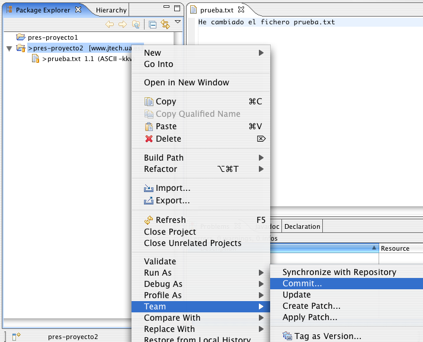
Al igual que cuando subes el proyecto por primera vez, aparecerá la ventana Commit en la que podrás escribir un comentario sobre los cambios que has realizado. Una vez que aceptas el commit, Eclipse se conecta con el repositorio y actualiza los cambios. Verás que desaparece el signo ">" que marcaba las diferencias con el repositorio.
Cómo explorar el repositorio
Para explorar el repositorio debes abrir la perspectiva (conjunto de paneles de Eclipse) CVS Repository Exploring. Para ello selecciona la opción Window>Open Perspective>CVS Repository Exploring. Eclipse mostrará el panel CVS Repositories con todos los repositorios CVS definidos (en este caso, sólo uno):
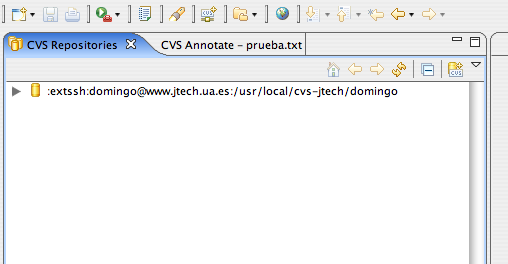
Podemos desplegar el repositorio y examinar su contenido. La rama HEAD corresponde a la rama principal. En otras sesiones veremos cómo crear ramas alternativas de un proyecto.

Pinchando en prueba.txt y pulsando el botón derecho podrás ver los comandos que puedes usar sobre un recurso del repositorio. El más común es Show History, que muestra las anotaciones de los sucesivos cambios que has ido guardando:
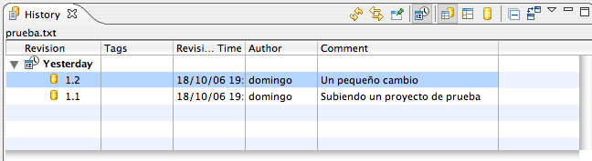
Para volver a la perspectiva anterior, debes seleccionar la perspectiva Resource en la parte superior derecha de la ventana principal de Eclipse:
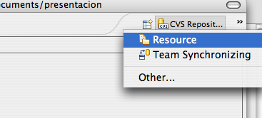
Cómo descargar un proyecto del repositorio
Por último, vamos a ver cómo descargar un proyecto del repositorio CVS a un espacio de trabajo nuevo. Para ello, creamos un espacio de trabajo nuevo con la opción de Eclipse File>Switch Workspace.... Escribimos un nuevo nombre de espacio de trabajo para crearlo (por ejemplo, presentacion2).
Una vez abierto el nuevo espacio de trabajo abrimos el asistente de creación de proyectos y seleccionamos la opción CVS>Projects from CVS:

Seleccionamos la localización del repositorio que nos proponen por defecto y seleccionamos el proyecto que queremos descargar:
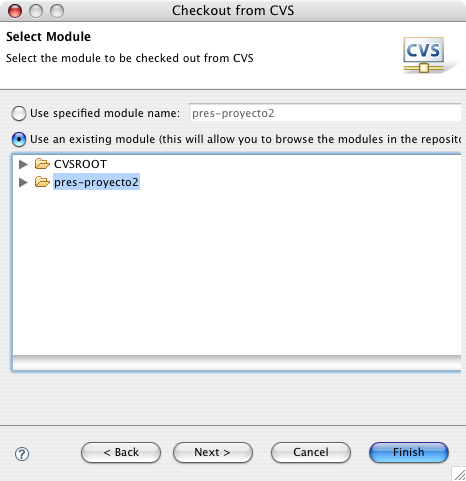
Ciclo de trabajo
Resumiendo, el ciclo de trabajo de una sesión de ejercicios será el siguiente. Supongamos que estamos en el módulo Java y Herramientas de Desarrollo (nombre corto: jhd):
- Si es la primera sesión de ejercicios, deberás crear el espacio de trabajo jhd
- Si no es la primera sesión de ejercicios, ya tendrás un espacio de trabajo con algunos proyectos en el lápiz USB. Copia el espacio de trabajo en el disco duro y trabaja con él. Si te has olvidado el disco USB, vuelve a crear el espacio de trabajo y descarga del repositorio CVS todos los proyectos hechos hasta ese momento.
- Crea los proyectos que se indiquen en la sesión de ejercicios y trabaja con ellos. Todos los nombres de proyectos tendrán como prefijo jhd-.
- Sube los proyectos al repositorio CVS. Asegúrate que al final del día, todos los proyectos están sincronizados.
- Al final del día copia el espacio de trabajo en el lápiz USB.
Al final del módulo, se entregará para su corrección el espacio de trabajo y todos los proyectos desarrollados.